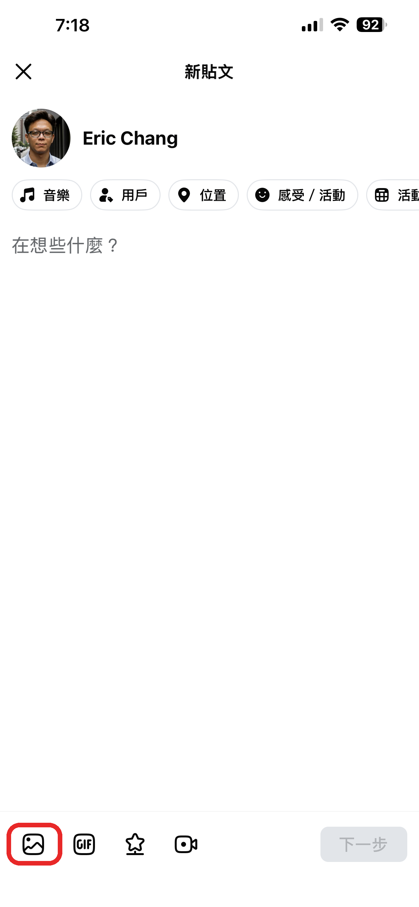
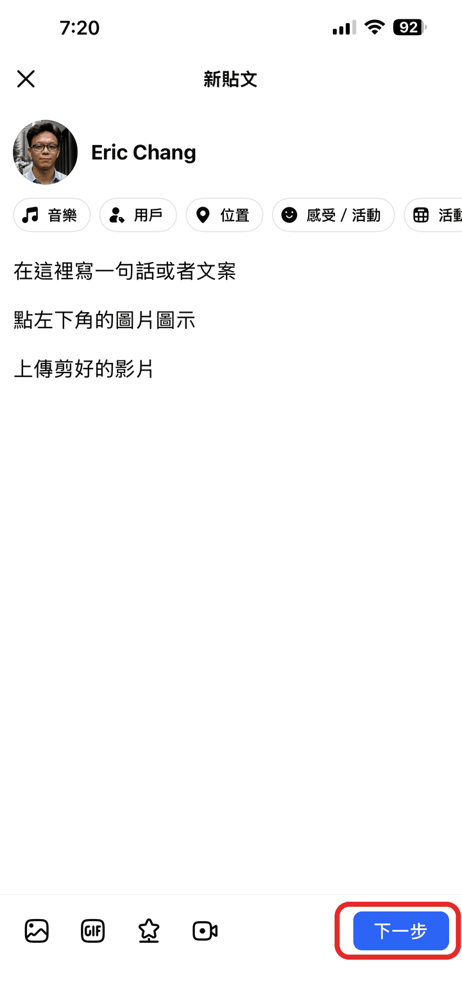
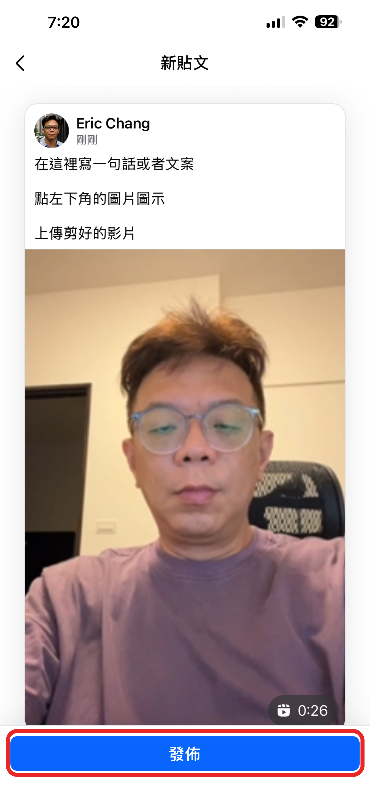
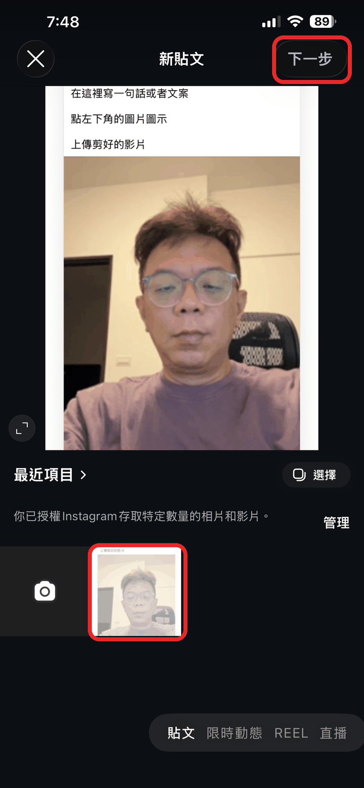
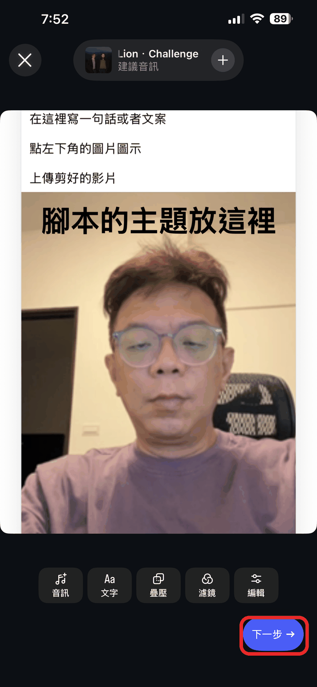
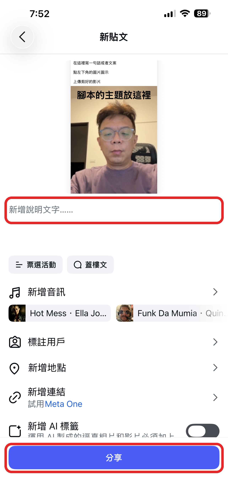
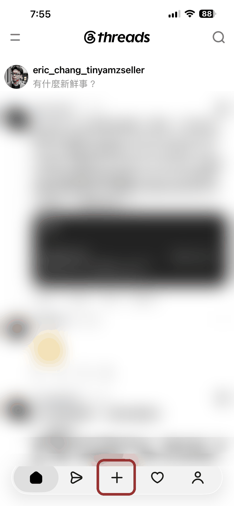
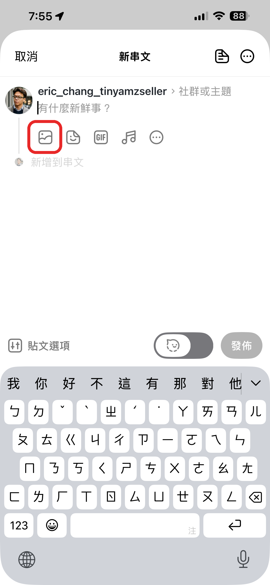
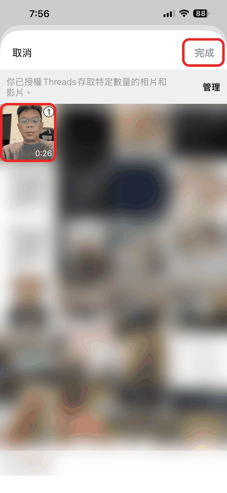
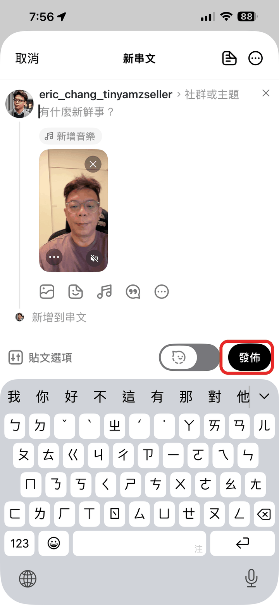

開攤的時候，按下面的「打開我的腳本」。一次出現一句，上面有拍法圖。
今天現場拍過的句子可以直接用，只要補拍還沒拍的。每句 3 秒左右，講錯重拍那一句就好。
打開「好康傳出來」→ 點選單「④ 交作業」→「從相簿選影片」
從第 1 句開始，照順序 5 段都傳（今天傳過的也再傳一次）→ 按「傳好了」。
幾分鐘後，LINE 會傳來剪好的 20 秒影片，字幕、音樂都弄好了。點開存到相簿，照下面的圖發出去。









